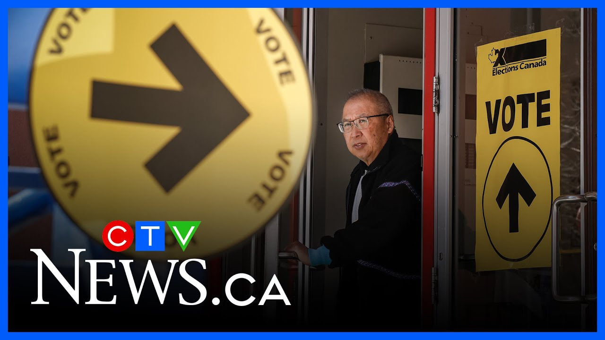

来B站一起耍【Global每日双语简报】
【如果加拿大选民没有得到他们想要的选举结果，他们会作何反应？】
Summary: The discussion highlights Canadian voters' high engagement in the election, shifting political narratives, and potential conservative backlash if results don't meet expectations.
摘要： 讨论强调了加拿大选民对选举的高度参与、政治叙事的转变，以及如果结果不符合预期可能出现的保守派反弹。

⏱️ Estimated Reading Time: 5 min
We've heard from the politicians the pundits.
我们已经听到了政治家和专家们的意见。
Now we're going to hear from the people.
现在我们要听听民众的声音。
I mean who who better positioned to tell us what Canadians are thinking than two men who talk the talk 5 days a week John Moore News Talk 1010 in Toronto and Bill Carroll 580 CFRA in Ottawa.
我想，还有谁比这两位每周五天都在谈论时事的人更适合告诉我们加拿大人在想什么呢——多伦多News Talk 1010的约翰·摩尔和渥太华580 CFRA的比尔·卡罗尔。
Okay 7.3 million Canadians voted in advance polls.
好吧，730万加拿大人在提前投票中投了票。
I get the sense that Canadians are far more engaged this time around than I've seen in any elections I've been involved in.
我感觉这次加拿大人的参与度比我参与过的任何选举都要高得多。
Your thoughts on that yeah I think they're very engaged.
你的看法呢？是的，我认为他们非常投入。
It could also have been that it was very convenient to vote over Easter.
也可能是因为在复活节期间投票非常方便。
I mean people had two holidays in some places but no I think the turnout is probably going to be very very large.
我的意思是，有些地方的人有两个假期，但我认为投票率可能会非常高。
What's interesting to me is how the narrative has changed so significantly though.
不过，让我感兴趣的是叙事发生了如此巨大的变化。
I mean I knew some Liberal MPs who went um canvasing uh during the Trudeau time and they were getting doors slammed in their face.
我的意思是，我认识一些自由党议员，他们在特鲁多时期去拉票时，门被砰地关在脸上。
That's why they went back to Ottawa and finally said "Listen you got to go."
这就是为什么他们回到渥太华，最后说“听着，你得走了。”
Now the narrative is uh something else altogether.
现在的叙事完全是另一回事了。
And uh you know I it's impossible to make predictions tonight but I can tell you talk radio listeners are always going to be more highly engaged and more political and frankly as Bill has said previously more conservative.
而且，你知道，今晚不可能做出预测，但我可以告诉你，谈话电台的听众总是会更加投入、更加政治化，而且坦率地说，正如比尔之前所说，更加保守。
Yeah But I think also and let's pick up on that Bill Donald Trump has lit a fire under Canadians.
是的，但我也认为，比尔，唐纳德·特朗普点燃了加拿大人的热情。
Never before have I seen this kind of patriotistism and pride across the country.
我从未在全国范围内看到过这种爱国主义和自豪感。
So you must be hearing that.
所以你肯定听到了这些。
Yeah But it's been a little like musical chairs.
是的，但这有点像抢椅子游戏。
You know the the music is playing and it's going to be the moment it stops.
你知道音乐在播放，而它停止的那一刻就是关键。
Where are people because we do have more conservative audiences.
人们在哪儿？因为我们的听众确实更保守。
Although I'm in the heart of liberal Canada Ottawa went very red in the provincial election recently.
尽管我身处自由派加拿大的中心，渥太华在最近的省选中变得非常红（保守）。
It's a it's a very liberal town.
这是一个非常自由派的城市。
Uh but my audience was absolutely fed up with Justin Trudeau.
但我的听众对贾斯汀·特鲁多彻底厌倦了。
They couldn't wait to get rid of him.
他们迫不及待地想摆脱他。
Then Donald Trump happened and you definitely saw that switch.
然后唐纳德·特朗普出现了，你肯定看到了这种转变。
And you know I could criticize Trudeau any day I wanted to and very few people defended him.
你知道，我可以随时批评特鲁多，很少有人为他辩护。
There's a little more defense of Mark Carney that I've seen with our audience but that's starting to switch back a little bit again.
我看到听众对马克·卡尼的辩护稍微多了一些，但这又开始有点转变了。
But I'll tell you one thing to John's point about engagement.
但我要告诉你一件事，关于约翰提到的参与度。
People are always engaged when they listen to talk radio but I've never seen anything like it.
人们听谈话电台时总是很投入，但我从未见过这样的情况。
I've been around a long time taking phone calls and texts and messages from people for decades.
我从事这行很久了，几十年来一直在接听电话、短信和留言。
They are more engaged.
他们更加投入了。
And I don't want to sound like Preston Manning here but conservatives are going to be very angry if they lose this election tonight.
我不想听起来像普雷斯顿·曼宁，但如果保守党今晚输掉选举，他们会非常愤怒。
They want to change.
他们想要改变。
They're furious that other Canadians don't see that in their mind this is the same government with a new person that they had.
他们愤怒的是，其他加拿大人没有意识到，在他们看来，这只是换了个人的同一个政府。
They're not going to take it well.
他们不会接受这个结果。
It's going to be a very contentious time if the election doesn't come out the way they want it.
如果选举结果不如他们所愿，这将是一个非常争议的时期。